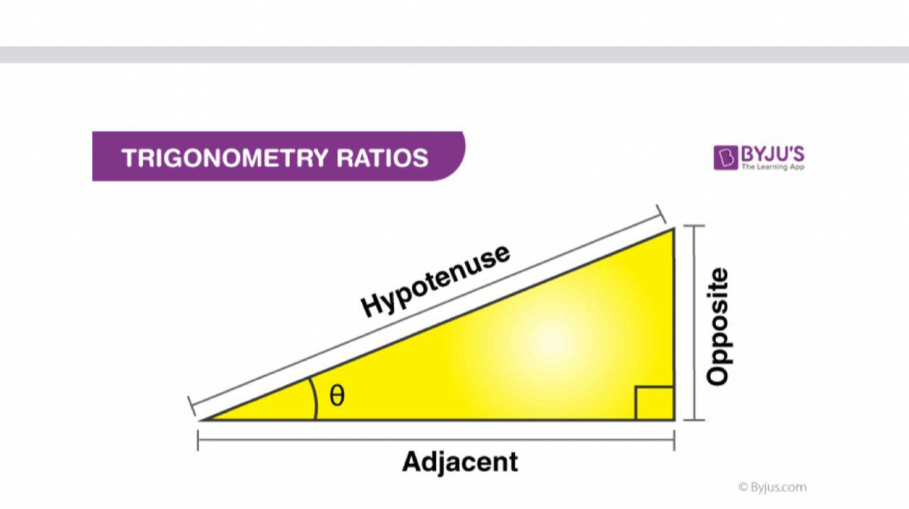

Trigonometry is a branch of mathematics that deals with the relationships between the angles and sides of triangles, especially right-angled triangles. In JHS 2, we focus on understanding the basic trigonometric ratios, how angles can be measured in radians, and applying the sine and cosine rules to solve problems, including those involving bearings.
Trigonometry Ratios-Sine, Cosine, Tangent. The trigonometric ratios of a triangle are also called the trigonometric functions. Sine, cosine, and tangent are 3 important trigonometric functions and are abbreviated as sin, cos and tan. Let us see how are these ratios or functions, evaluated in case of a right-angled triangle.
In a right-angled triangle, the trigonometric ratios are used to relate the angles to the lengths of the sides:
sin(θ) = Opposite / Hypotenuse
cos(θ) = Adjacent / Hypotenuse
tan(θ) = Opposite / Adjacent
These ratios also have reciprocal functions:
csc(θ) = 1 / sin(θ) = Hypotenuse / Opposite
sec(θ) = 1 / cos(θ) = Hypotenuse / Adjacent
cot(θ) = 1 / tan(θ) = Adjacent / Opposite
While angles are commonly measured in degrees, they can also be measured in radians. Radians provide a different way to express angles based on the radius of a circle:
π radians = 180°
To convert degrees to radians, multiply the number of degrees by π/180. To convert radians to degrees, multiply by 180/π.
Bearings are a way of describing direction using angles measured clockwise from the north direction. When solving problems involving bearings, the sine and cosine rules can be very useful:
a / sin(A) = b / sin(B) = c / sin(C)
This rule is used to find unknown sides or angles in any triangle when you know either two angles and one side or two sides and a non-enclosed angle.
c² = a² + b² - 2ab cos(C)
This rule is useful for finding an unknown side or angle in a triangle when you know two sides and the included angle or all three sides.
Using these rules, you can solve various real-world problems, such as determining the direction or distance between two points using bearings. For example, if you know the angles and distances between landmarks, you can use the sine and cosine rules to calculate the exact direction or distance you need to travel.